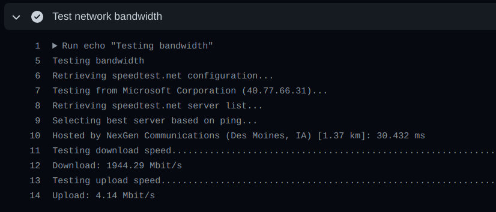
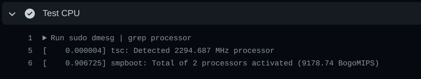
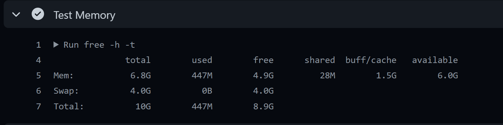

11 minutes
Utilizing CI/CDs to the Fullest for Fun and Profit

Hey folks,
We all have heard of CI/CDs right? I was exploring GitHub Actions and what I found was the fact that it was an extremely underrated resource which is not quite widely used for general purposes by people. In this blog post, I aim to detail how people can really benefit from CI/CDs with GitHub Actions in focus, and how one can fully exploit the resource to get the most out of it. This post is more inclined at security people, but literally anyone could use this guide to escalate up their productivity, plus a bonus at the end. üòâ
Wait, what is CI/CD?
Lets refer to what Wikipedia has to say:
In software engineering, CI/CD generally refers to the combined practices of continuous integration and either continuous delivery or continuous deployment. CI/CD bridges the gaps between development and operation activities and teams by enforcing automation in building, testing and deployment of applications.
So basically it is a setup utilized by developers to automate building & deployment of their apps. You noticed the catch here? “Automation”. Well that’s what we’re absolutely interested in.
GitHub Actions was made available for public use back in November, 2019 and indeed offers a great toolset which can drastically improve one’s work potency. At the time of writing this blog, GitHub offers free 2000 minutes per month, (which is more than 1 hour daily!) for free users.
If you cannot afford a private server/VPS to run your scripts on, GitHub Actions got you covered. Additionally, if you’re into bug bounties, you must already know that the competition out there is huge and one should actually try to automate things as much as possible. Lets see what all of this is about, shall we?
Understanding the Requirements/Usage
If you have ever used any cloud platform, you will certainly know how easily you can spin up instances for a task and then shut the machine down as soon as the task is over. Well, on a fairly abstracted level, this is almost the same. Simply put, every time you “run a build”, you get a fresh new machine which allows you to setup a couple of dependencies and then you can run your scripts up there howsoever you like. There are already well-known techniques that leverage monitoring setups, certificate transparency monitoring for getting new subdomains, e.g. sublert, cert-spotter, etc. CI/CD platforms prove to be an extremely feasible resource in such cases.
Exploring things on a much broader level, it is quite evident that you get several advantages in using such kind of setups. Apart from the hardware (although virtualized) and network bandwidth, one just cannot rule out the fact that you get a fresh new setup spun up in a matter of seconds. Having a new setup also includes installing dependencies afresh and often has perks over a cluttered up home setup where multiple versions of a same dependency might mess up with the runtime results.
CI/CDs also prove to be a useful resource when you have a heavy I/O or time-consuming task at hand which can take hours to complete. Do you have to run a full nmap port scan on a couple of targets or probably a an entire CIDR? Do you need to extract & parse a huge dataset and run a few scripts on it? Well, integrated tools make lives much easier in these cases.
Getting Started
So how do we achieve this? Lets dive in rightaway.
NOTE: This assumes that you have a basic understanding of how Git and GitHub works, if not, I’d highly recommend getting a good grip on both the topics.
Understanding the Syntax
All that GitHub Actions requires, is a YAML file containing the configuration on how you‚Äôd like to setup the workflow. There are a lot of things to cover when it comes to a custom CI/CD automation setup and docs explain it very well, however, I’ll try breaking down things to make this as simple as possible. Stay with me.
An exemplary simple workflow in a Python environment configuration looks like this:
name: My Custom Automation Setup
on:
# Triggers the workflow when you push a commit to master branch
push:
branches: [ master ]
# Allows you to run this workflow manually from the Actions tab
workflow_dispatch:
jobs:
build:
runs-on: ubuntu-latest # The type of os that the job will run on
steps:
# Checks-out your repository under $GITHUB_WORKSPACE, so your job can access it
- uses: actions/checkout@v2
- name: Setup python
uses: actions/setup-python@v2
with:
python-version: 3.8 # Specifies your python version
# Sets up the dependencies using pip, either manually or using a requirements.txt file
- name: Install all dependencies
run: |
python -m pip install --upgrade pip
python -m pip install requests selenium ...
python -m pip install -r requirements.txt
# Run the your script/set of scripts
- name: Run the scripts here
run: |
python script1.py
python script2.py
python script3.py
...
Lets quickly break the major components down into simple steps:
- The
ondirective (line 3) specifies when the build should initiate, in our case we have designated to run this workflow in both situations, when a commit is pushed to the master branch of the repository, as well as manually trigger it whenever required — the workflow_dispatch switch. - The
runs-on(line 12) directive specifies on what platform should the code run on, in our case we have chosen the latest Ubuntu as our distro. - The next 2 chunk of steps (line 15–26) is actually setting up the environment, which in our case is setting up Python and then installing the dependencies. If you’re using Python, it is highly recommended that you should use a
requirements.txtfile to manage your dependencies, which would otherwise result in discrepancies. - The last couple of lines (line 30–33) runs your actual code and produces the desired output.
Two points of interest to note here:
- the
rundirective, if specified anywhere, will execute a set of commands to run on the system. This is equivalent to directly typing commands on your terminal. - the
namekey is simply used as an identifier for a block of commands serving a particular purpose, makes things look neat when the workflow is actually running.
The aforementioned setup suits best in situations when you intend to run a single/set of scripts at your will. A worth noting point is that, there is no restriction on the number of workflows nor in the number of repositories you create, i.e. you can create multiple workflows for a single script as well as one workflow per script. Its entirely upto you how you orchestrate your setup to best suit your needs. The only restriction here is the time for which you can execute the workflows.
Now that we know how to create a simple workflow, lets take a look at enriching our setup by adding more capabilities. The first item on the list is to add a way where we can run the script on a regular basis. How? The answer lies in GitHub Actions’ cron feature which lets you to setup cronjobs. As shown below, simply add a schedule directive with the cron key to the on section.
on:
push:
branches: [ master ]
schedule:
# Runs the script daily at 00:00 UTC
- cron: '0 0 * * *'
workflow_dispatch:
So far what we did was to setting a cronjob that runs daily at 00:00 UTC. The cron syntax is a bit tricky and if you do not understand it, you can use crontab.guru to setup a cronjob according to a time which you find feasible. That’s it, your scripts are all set to run daily when you’re deep asleep and the next day, your automation setup will present you with a new set of possible assets/vulnerabilities to poke at!
Another important aspect of creating an automation setup is logging the results to an output file. Any output your scripts generate will be lost as soon the workflow completes. This situation can be tackled in a variety of ways (e.g. pinging the output to a slack channel), but personally my favourite is to just simply commit all the output files back to the repository after the workflow has completed. To do so, we can simply append the following at the end of the script (make sure to maintain even indentation).
- name: Commit and push
uses: stefanzweifel/git-auto-commit-action@v4.2.0
with:
commit_message: Your commit message
commit_user_name: 'My Automation'
commit_user_email: 'literally-anything-here@github.com'
The final resultant workflow YAML file should look like this:
name: My Custom Automation
on:
# Runs daily at 00:00 UTC
schedule:
- cron: '0 0 * * *'
workflow_dispatch:
jobs:
build:
runs-on: ubuntu-latest
steps:
- uses: actions/checkout@v2
- name: Setup python
uses: actions/setup-python@v2
with:
python-version: 3.8
- name : Install dependencies
run: |
python -m pip install --upgrade pip
python -m pip install bs4 html2markdown selenium requests
# results.json will be committed back on GitHub
- name: Run the scraper
run: python mainscript.py -o results.json
- name: Commit and push
uses: stefanzweifel/git-auto-commit-action@v4.2.0
with:
commit_message: Regenerate GitBook (${{ github.sha }})
commit_user_name: 'Automation Runner'
commit_user_email: 'github-actions.automation@github.com'
Creating the Setup
So far, we know how to write a config file for a GitHub Actions setup, lets put it into action:
- A good point to start would be to create a private repository on GitHub and upload your scripts up there.
- Once it is done, you can create a
.github/folder under the root directory of your repo, and then create a folder named workflows/ and put the main.yml file in. Or, you can switch to the Actions tab and start writing your own config file (GitHub helps you by auto-completing suggestions, which I think is great). - As soon as you commit the file, a “build” should automatically trigger running your script(s) for the first time.
That’s it, you’re all set.
Why should I use it?
Its an obvious thing that “Why should I use it?” question appears? Usually there are 2 aspects of the issue, the first is the network bandwidth, and secondly the hardware (RAM & CPU) available. Well, lets look at some benchmarks, shall we?
To answer the first part of the question, you get over 1.5 Gigabit/s network bandwidth, which I think is far greater than an average home network. So if your scripts consume significant bandwidth, e.g. make a lot of HTTP queries, they’ll likely run way faster than if you run them on your own home network. The image below answers the second part of the question:
You get a 2-core CPU each clocked at 2.30GHz which is quite fair in my opinion. A very astonishing thing I observed was that it offers almost ~50MB cache memory which is way more than any normal PC/laptop.
As for RAM, you have a total of 10GB at your disposal (4GB swap and 6GB available), which I personally think is great and should be sufficient for all kinds of scripts you’re planning to run on it.
Few Example Usecases
Well, so far we have seen the whats’ and hows’. Lets take a look at some whens’:
- Full port scans usually take a lot of time and bandwidth. Additionally the time exponentially increases if you need to spoof the source packet address.
- Downloading and parsing large datasets to extract information for research purposes.
- IP exclusivity: In pentesting, you might come across cases where a security solution rate-limits/blocks your IP address from sending packets to their system. I have personally observed CI/CDs spinning up runners on a different IP than that of its previous execution, so that’s where this might come handy!
- Continuous monitoring setups like subdomain discovery throught CT monitoring, or setups checking for changes in page content.
- and so on…
Automation might be an alias of laziness
After seeing the innumerable benefits of using Actions, I tried using it for my daily tasks. But I‚Äôm too lazy to write config files for every task and then go ahead and upload it to GitHub. ü•±
Therefore, I decided to go ahead and write Bludger, an automation framework around GitHub Actions, because why not? It has a powerful templating engine coupled with automatic repository creation/deletion/cloning and a lot of other features which allows you to make use of the CI on a daily basis with minimal effort. üòâ
Lets take look at a simple use-case where we run masscan on 1.1.1.1/28:
- First step would of course be to install the tool. Simply follow the setup instructions of the tool and try getting a basic understanding of the command line arguments it supports. Once you’ve setup your access token lets step ahead.
- Now, lets directly execute the one-in-all command:
./bludger.py -n massrun -T basic-shell --clone \
-C 'sudo apt install masscan && sudo masscan --rate 1000 1.1.1.1/28 -p 1-1024 -oJ 1.1.1.1.json'
So what happened in the above command?
-n massrun: Created a new repository massrun.-T basic-shell: Makes use of the template basic-shell.yml undertemplates/folder.-C <command>: Takes in the command you want to run for that template. In our case, we first installed masscan, then ran the tool to scan the first 1024 ports for all hosts in1.1.1.1/28at rate of 1000 packets/s.--clone: Finally, clone the repository under thecustom/folder so that you can see the results altogether (since we used the-oJswitch to output the scan results as JSON).
Wait, its that simple? Yes! For more info, you can refer to the wiki of the repository.
Concluding thoughts
Thinking about it, GitHub Actions is a powerful toolset that can indeed be used to level up your productivity as well as ease your daily life by letting the CI do the heavy job for you. However, it is also important that you make use of the resource keeping in mind GitHub’s Terms. With this good food for thought, I hereby conclude this article.
Hope you learnt a new thing today, and of course, start using the tool on a daily basis to game up your productivity!
2324 Words
2021-01-24 00:00